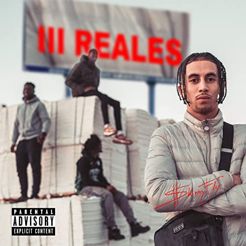

|
 |
|  |
El drill es un estilo con bajos potentes y cajas afiladas, y una forma de rapear casi sin esfuerzo ni musicalidad. El drill habla de la vida de la calle y la violencia en aumento sin florituras ni emociones, de la manera más cruda posible. No hay mucha melodía, ni nada que pueda otorgar mucha alegría, todo responde a crear un ambiente de frío y soledad.
Un círculo mayormente cerrado, que se mantiene en el underground, donde las voces llegan desde detrás de pasamontañas y máscaras, sin armar gran revuelo. Ponerse detrás de un micro es una vía de escape y un mensaje a amigos y adversarios. No podemos ni siquiera hablar de salir de la vida de la calle, los problemas son tan grandes que esa vida ya no va a cambiar, y mucho menos hacerse famoso y ser reconocido por todo el mundo.
Es la historia del hip hop más clásico, del cual el drill tiene la esencia y un camino paralelo.
El drill está ligado a esa vida de pandillas, y en sus letras se narran historias reales y bien chungas.
La mayoría de artistas están de acuerdo en que el drill puede glamurizar esa violencia, pero no es el factor que va a empujar a nadie a llevarla a cabo. Afirman que es el abandono a ciertos barrios el que la provoca, y que culpar al drill no hace más que apartar el foco del problema real.